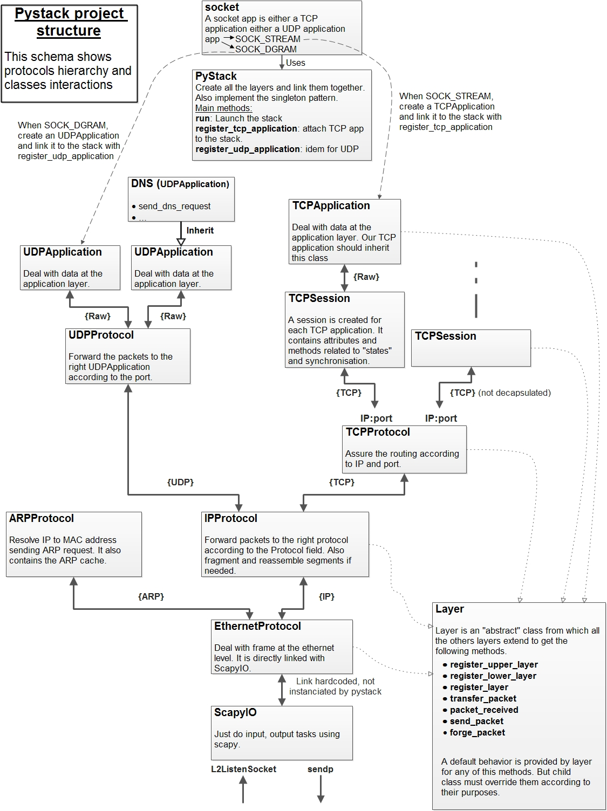

All the class are located in a folder called pystack. Into this directory there is the following modules:
pystack
|
+-- kernel_filter
|
+-- pystack
|
+-- pystack_socket
|
+-- layers
|
+ -- ...
layers contain all the protocol implementation and two associated class (scapy_io and layers) which will be discussed below. Any new protocol should be put in this folder. Feel free to add your own ;) For now the existing protocol implementations are:
layers
|
+-- layer
+-- scapy_io
+-- ethernet
+-- arp
+-- ip
+-- tcp
+-- udp
+-- tcp_session
+-- tcp_application
+-- udp_application
+-- dns
+-- ...
layer provide the basic layer structure that any protocol should implement. Among this structure the more important are the way the way layers communicate with the two upperlayers and lowerLayers dictionnary, but also the way to register layers each other.
class Layer(object):
name = ""
def __init__(self):
self.lowerLayers = {}
self.upperLayers = {}
self.register_upper_layer("default", Default())
Class layer has an attribute called name which has to be modified by child class with the appropriate name. “name” will be used as key identifier in upperLayers and lowerLayers. Eg: Ethernet layer receive an IP packet, it will then look for the “IP” layer in upperLayer to forward the packet to.
In init, a layer has both dictionnary lowerLayers and upperLayers which will respectively hold handlers for layers under and above. Within this dictionnaries layers are identified by their name (IP,TCP, Raw ..). A default upperLayer is added to handle packets that does not match any other layer. Default does nothing when a packet is received, but you can customize the behavior of Default like logging packets etc.
The IP layer has for instance the following layers: lowerLayers{“default”:ethernet} upperLayers{“TCP”:tcp,”UDP”:udp,”default”:Default}
def register_upper_layer(self, name, layer): #Register the given layer in upperLayers with the given name
self.upperLayers[name] = layer
def register_lower_layer(self, name, layer): #Register the given layer in lowerLayers with the gven name
self.lowerLayers[name] = layer
def register_layer_full(self, name, layer): #Register the given layer in upperLayers and itself as the layer default lowerLayers
self.register_upper_layer(name, layer)
layer.register_lower_layer("default", self)
def register_layer(self, layer): #Idem as register_layer_full but use the layer name attribute as key identifier
self.register_layer_full(layer.name, layer)
def unregister_upper_layer(self, name): #Unregister the layer identified by name in upperLayers
self.upperLayers.pop(name)
All this method are really useful for registering layers together.
The following methods are really important because they define a default behavior for sending, and forwarding packets from on layer to another.
def send_packet(self, packet, **kwargs):
"""By default when calling send_packet it forge the packet calling
forge_packet and forward it to the lower layer calling transfer_packet"""
self.transfer_packet(self.forge_packet(packet), **kwargs)
def forge_packet(self, packet, **kwargs):
"""By default does nothing but should be overriden by child class"""
pass
def transfer_packet(self, packet, **kwargs):
"""Define the default behavior when a packet should be transfered to the lower layer.
The default behavior is to call the send_packet of the default lowerlayer. This method
can be overriden by child layers"""
self.lowerLayers["default"].send_packet(packet, **kwargs)
When you want to send a packet in a layer you should call send_packet. send_packet will by default call the method which should be overriden and then call transfert_packet which by default call the send_packet of the “default” in lowerLayers. This is the basic process of a packet within a layer. Then this packet goes through all the layers until it is sent by scapy_io.
The second most important method after send_packet, is packet_received. It is called when a packet is received and should then contain all the packet processing. By default it “decapsulate the packet and send the payload to the upperlayer referenced by the payload name.
def packet_received(self, packet, **kwargs):
target = self.upperLayers.get(packet.payload.name, self.upperLayers["default"]) #Get the handler name, default instead
kwargs[packet.name] = packet.fields
target.packet_received(packet.payload, **kwargs) #Call packet_received of the handler with the payload
PyStack is a class that create a stack. It instanciate all the layers and register all them together. See the code for more. Another significant point about pystack is that the class implement the singleton pattern overriding the __new__ so that any component of the same program that will use pystack will manipulate the same stack “sharing” it (as it is the case with the real stack).
The following schema summarize the all structure of the project and what is built by pystack class.
pystack_socket intent to provide the same interface than socket but to use pystack. So the most critical functions had been reimplemented in a really really basic manner. All the rest is reused from socket. This will allow to use pystack in the same way than socket (but in more trivial). Indeed options, some functions and socket types are not supported. Only SOCK_STREAM, and SOCK_DGRAM are working. The __init__ methods show how tricky it is:
class socket:
def __init__(self, family=AF_INET, type=SOCK_STREAM, proto=0, app=None):
self.app = None
self.blocking = True
self.stack = PyStack()
if family not in (AF_INET, AF_INET6, AF_UNIX):
raise error("Address family not supported by protocol "+family)
else:
self.family = family
if type not in (SOCK_DGRAM, SOCK_STREAM):#SOCK_RAW, SOCK_RDM, SOCK_SEQPACKET):
raise error("Invalid argument "+type)
else:
self.type = type
if app:
self.app = app
else:
if type == SOCK_STREAM:
self.app = _TCPSocket()
elif type == SOCK_DGRAM:
self.app = _UDPSocket()
self.proto = proto
if not app:
if type == SOCK_STREAM:
self.stack.register_tcp_application(self.app)
elif type == SOCK_DGRAM:
self.stack.register_udp_application(self.app)
self.stack.run(doreactor=False)
Some comments about the code:
All the other methods do the same taking the same kind of arguments than socket but dealing with it differently.